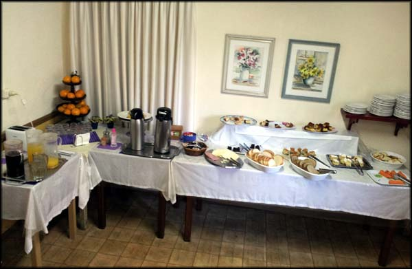
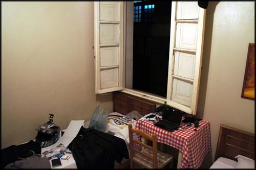
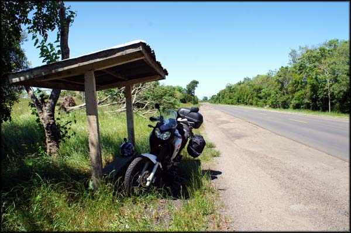
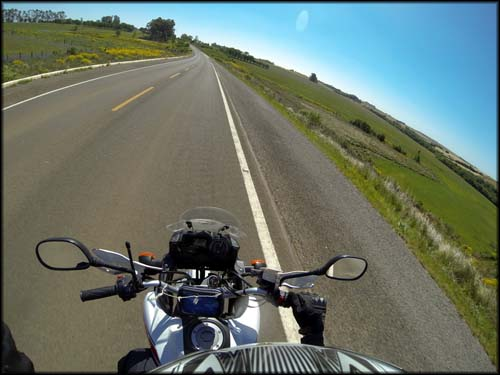
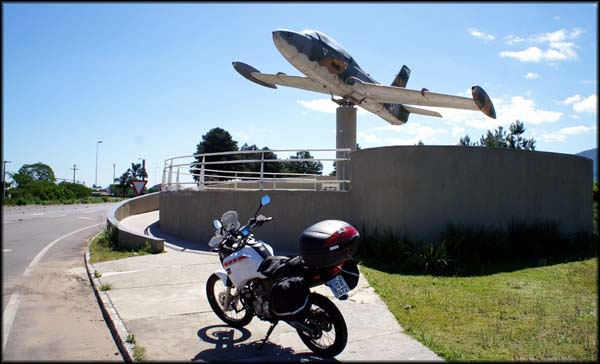
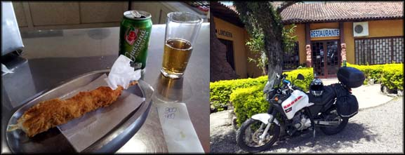
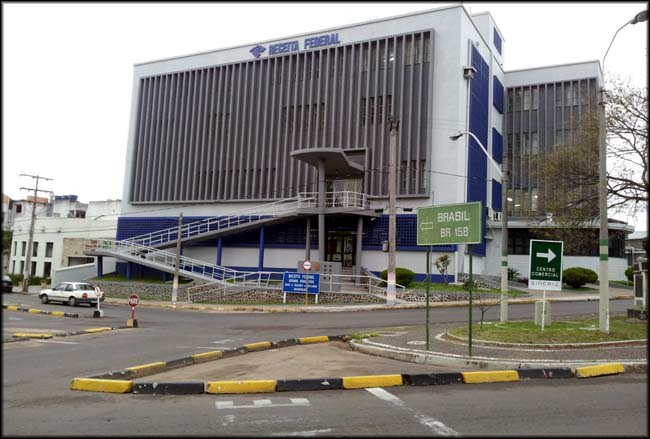
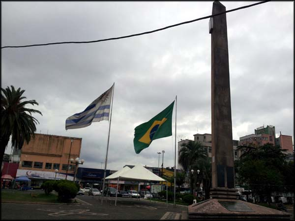
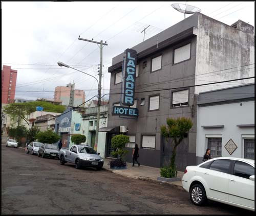
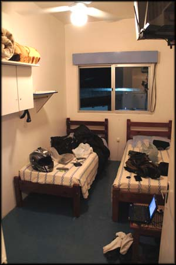

Acordei cedo em Bento Gonçalves, e fui pegar o café da manhã do Hotel Primavera. Tinha uma variedade bacana, sucos, bolos, frutas, coisas básicas mas diversificadas. Pelo preço da diária poderia ser melhor, mas lá era tudo caro mesmo.
Nada muito saboroso, mas estava bom...
Voltei para o quarto, ajeitei as bagagens, paguei a conta, amarrei tudo na motoca e voltei pra estrada.
Quarto do Hotel Primavera, muito bom, preço justo em comparação aos demais.
Segui pela RS-287 direto, passando pela entrada de várias cidades. Lajeado, Santa Cruz do Sul, Candelária, onde abasteci (2.573 Km rodados) às 14:30, e Santa Maria. O calor estava de matar, e o sol rachando a cuca.
Como eu estava dependendo do GPS do celular, vez ou outra eu ficava em dúvida e parava pra consultar. Mas estava tanto calor que às vezes eu parava para consultar o GPS mesmo sem estar em dúvida, só pra pegar uma sombrinha...
Qualquer sombrinha era atraente. O sol estava tão forte que dava vontade de parar em cada ponto de ônibus...
Mas apesar da temperatura inóspita para este viajante, as pequenas estradas do interior do sul tinham paisagens interessantes, e a cada pequena cidadela se via construções interessantes, ou formações naturais de muita beleza.
Ê terra boa...
Avião desativado decorando a entrada de uma base aérea. Máquina interessante.
Nem lembro onde, parei em um dos raros postos de gasolina para descansar as pernas, e decidi comer alguma coisa, já passava do meio dia. Na lanchonete, nada atrativo ao paladar, uns salgados feios no mostruário... arrisquei um espetinho de frango empanado, estava uma porcaria e não consegui comer todo.
Espetinho de frango empanado na lanchonete. Uma porcaria.
De lá passei para a RS-158, e esse foi o único trecho da viagem em que eu realmente senti medo por estar viajando sozinho. Foram horas de estrada que cruzava áreas estritamente rurais. Sem estrutura de combustível, sem local de parada, só porteiras de fazendas de tantos em tantos quilômetros, de tão grandes que eram as propriedades.
O vento era muito forte, vários animais mortos no acostamento e pedaços de para-choques de carro. E os pássaros tinham um péssimo hábito de ficar catando sementes no meio da estrada, e só saiam voando quando eu chegava quase a atropelá-los. Tinha um ou outro que se perdia no vôo rápido e quase se chocava contra o farol da moto ou meu capacete, tomei vários sustos.
Eu só pensava que se desse algum problema na moto ali, ou um dos pássaros suicidas me assustasse e provocasse uma queda, aí sim passaria por dificuldades. Raramente algum carro ou caminhão passava por mim, e os poucos que apareciam, antes de ultrapassarem, primeiro me aterrorizavam um pouco, andando colados atrás da moto, e depois cortando sem mudar de faixa, dividindo quase o mesmo espaço comigo.
Jeito estranho de dirigir no sul, a faixa da esquerda livre, sem nenhum carro vindo em sentido contrário, os motoristas não se davam ao trabalho de jogar para o lado, passavam raspando em mim, invadindo a faixa. Com o tempo, a cada carro que se aproximava, eu já colava no acostamento e reduzia gradativamente para 50km/h, de forma que me ultrapassassem logo. Os motoristas realmente estavam me deixando assustado.
A moto não passava de 80km/h por causa do vento contrário. Mas apesar de todo esse terror, eu queria muito ter parado algumas vezes para tirar fotos. Tinha parado de chover, o sol estava bonito, as paisagens verdes. Mas não tive coragem de parar a moto, o medo dela não ligar, dar um apagão como o que aconteceu quando cheguei em Cambará do Sul, sei lá, o psicológico estava abalado rs.
E assim fui eu, quase três horas seguidas sem parar para descansar, velocidade média de 60km/h e perdendo a briga contra a força do vento dos pampas gaúchos. Até que cheguei em Rosário do Sul e pude abastecer (2.807 Km rodados) lá pelas 17:30h.
Nesse momento eu estava bem receoso com o tipo de lugar que eu encontraria. Não sabia o que esperar de cidades próximas da fronteira do país, e ficava imaginando mil coisas perigosas. Enquanto abastecia, fui abordado por um rapaz que também parara para abastecer o carro. Ele ficou entusiasmado em me ver, chegou puxando conversa, dizendo que era motociclista e que viajava muito... no começo eu fiquei um pouco na defensiva, estava achando aquela parte do trajeto um pouco estranha, e estava um pouco com a cabeça na lua quando comecei a ser interrogado sobre a viagem.
Falei que realmente tinha vindo do Rio de Janeiro pilotando, mas que não sabia para onde iria. Menti por receio, não quis dizer que pensava em entrar no Uruguai. Mas o cara era gente boa e continuou puxando assunto. Ele era de Bagé, me deu várias dicas de viagens na região. Depois se despediu e foi para a lanchonete do posto.
Eu também iria para a lanchonete depois, beber um café. E quando entrei comentei com o cara que na verdade eu pensava em ir até o Uruguai, etc. Ele ficou entusiasmado, disse que volta e meia vai lá, pois é pertinho, afinal. Me deu umas dicas sobre Santana do Livramento e Rivera, e até ligou para um primo dele que mora na fronteira, me passando seu telefone caso precisasse de alguma ajuda por lá.
Trocamos umas ideias, agradeci o auxílio, e parti em direção ao meu objetivo final naquele dia, a fronteira entre Brasil e Uruguai.
De novo, estrada com retas infinitas, vento forte, pilotagem extremamente cansativa. Cheguei em Santana do Livramento esgotado, e um pouco temeroso com esse lance de cidade de fronteira, ter que me comunicar em espanhol sendo que não sei falar nada dessa língua... Parei em um posto para me informar, não entendi nada que me explicaram. Pensei como estava ferrado, se não conseguia entender as explicações em português ainda no Brasil, depois que atravessasse a fronteira é que ia ser brabo.
Segui até o que me parecia ser o centro da cidade. Passei pela Praça Internacional, e quando me dei conta estava rodando já em terras uruguaias. Pô! Que estréia mais sem graça, a primeira vez que eu pilotaria em outro país, já estava lá e nem tinha me ligado! Ali não existe uma estrutura de aduana dividindo os países, e depois viria a descobrir que a aduana uruguaia ficava bem mais para dentro de Rivera.
Brasil pra esquerda, Uruguai à direita.
Trânsito meio confuso, muito comércio e pessoas andando a pé. Em um sinal parou um senhor uruguaio em uma CG 125 velha capacete “coquinho” e uma mulher na garupa. "Não acredito, veio do Rio de Janeiro?? De moto??", disse ele, ou melhor, foi o que eu entendi naquela primeira vez em que falaram comigo em espanhol.
Praça na fronteira Brasil x Uruguai em Rivera
Me comuniquei como pude, e quando ia pedir dicas de hospedagem o sinal de trânsito abriu e tivemos que andar. Rodei sem saber para onde iria, fui seguindo o pouco fluxo, até que parei a moto em uma rua residencial. Usei o GPS do celular. Como voltar ao Brasil, GPS!? Mesmo com a ajuda dele me perdi mais um pouco, mas consegui.
Aproveitei para procurar pela internet do celular algum hotel em Santana do Livramento, mas nada. Comecei a rodar a esmo pelos quarteirões. Passei em frente a um hotel bem bonito e imponente, arrisquei perguntar. Custava R$ 150,00 o pernoite. Pra mim não dava.
Continuei rodando. Passei em frente ao Hotel Laçador. Bem feinho por fora, mas eu já estava esgotado, resolvi perguntar. Custava R$ 55,00 o pernoite. Tinha garagem e café da manhã, e internet que só funcionava da recepção, mas tinha. Achei melhor ficar ali mesmo, já era noite e eu não queria mais ficar perdido por lá.
Hotel Laçador. Não é o pior do mundo, mas tem opção melhor na cidade.
O quarto era seguramente o pior de toda a viagem até agora. Mas ainda assim era habitável. Espalhei as coisas, escondi o dinheiro em espécie e equipamentos eletrônicos que levava. Pela primeira vez em toda a viagem não senti segurança em deixar as coisas no quarto.
Desci para pegar mais informações. Fui fazer o que costumava fazer nas cidades onde parei antes. Saí para andar, circular o sangue nas pernas, e conhecer o que tinha perto. Mas, diferentemente de outros lugares, estava com uma sensação ruim. Dei a volta no quarteirão, e voltei para o hotel. Fiquei lá na recepção, observando. Em uma televisão velha passava a típica programação "deixa-burro" da rede Globo, coisa irritante.
De repente saiu um cara bem esquisito, deixou uma chave na recepção, e foi embora. Me deu um gelo. Pensei que poderia ter um esquema dos caras da recepção com algum bandidinho que entrava nos quartos dos incautos turistas enquanto eles estavam fora. Subi apressadamente para o meu quarto. Estava tudo em ordem, dinheiro, câmera... desci, observei mais, fui dar outra volta, em um quarteirão diferente. Voltei logo, observei mais... e desisti das minhas caminhadas e de procurar um lugar para jantar. Eu não estava seguro com a situação.
Havia uma mercearia bem ao lado, e comprei uma garrafa d'água, uma cerveja, e voltei pro quarto para jantar todas as barrinhas de cereal que encontrei na mochila rs.
Já nem conseguia raciocinar de cansaço e fome, e deixei para ver no dia seguinte como fazer para entrar com a moto no Uruguai, documentação, para onde ir, etc.
Quartinho sacana no Hotel Laçador
Fui tomar um banho, e a porcaria do chuveiro elétrico estava queimado. Putz! E estava um frio chatinho. E a água mais fria ainda! Mas eu, que estava muito sem paciência para descer na recepção e reclamar, encarei o gelo, e fui deitar, tremendo.
Demorei a dormir, barriga vazia, fiquei passando mal por um tempo. Acho que o ingrato do espetinho de frango me fez mal, cheguei a levantar para ir ao banheiro achando que iria vomitar... Nossa, já estava com raiva daquela cidade, já estava com raiva do hotel, e estava com raiva de mim por estar fazendo uma viagem totalmente doida sem planejamento algum e sem saber para onde iria e o que iria encontrar. Voltei pra cama, e consegui finalmente dormir um pouco. Tinha decidido acordar bem cedo para procurar outro hotel. Provavelmente para resolver a papelada e continuar a viagem Uruguai a dentro, já seria na parte da tarde, e eu, não querendo rodar à noite no primeiro dia em outro país, teria que pernoitar novamente em Santana do Livramento. Mas naquele hotel não, seu eu pudesse evitar.